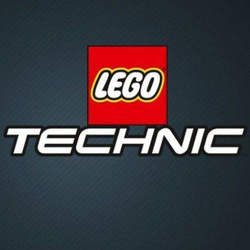

19.10.2023 - Сегодня канал выходит из заморозки!
Канал TheArtOfLegoTehnic заморожен!
10.9.2023 - сегодня канал входит в принудительную заморозку! Предположительная дата разморозки - 10 Октября.
Значимые Опросы более не будут проводится.
9.9.2023 - С сегодняшнего дня я более не буду проводить важные опросы. Я сделал выводы, и пришел к варианту что лучше будет если я буду сам выбирать темы самоделок.